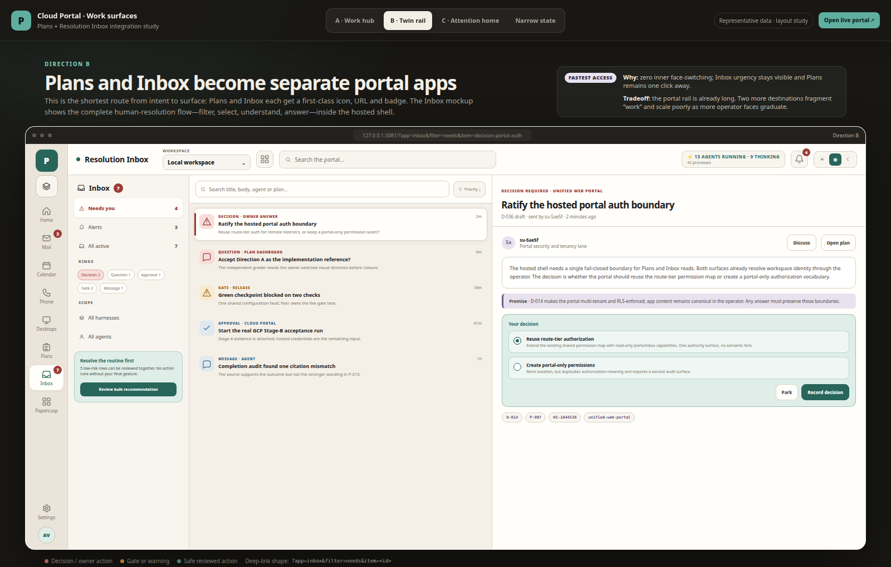
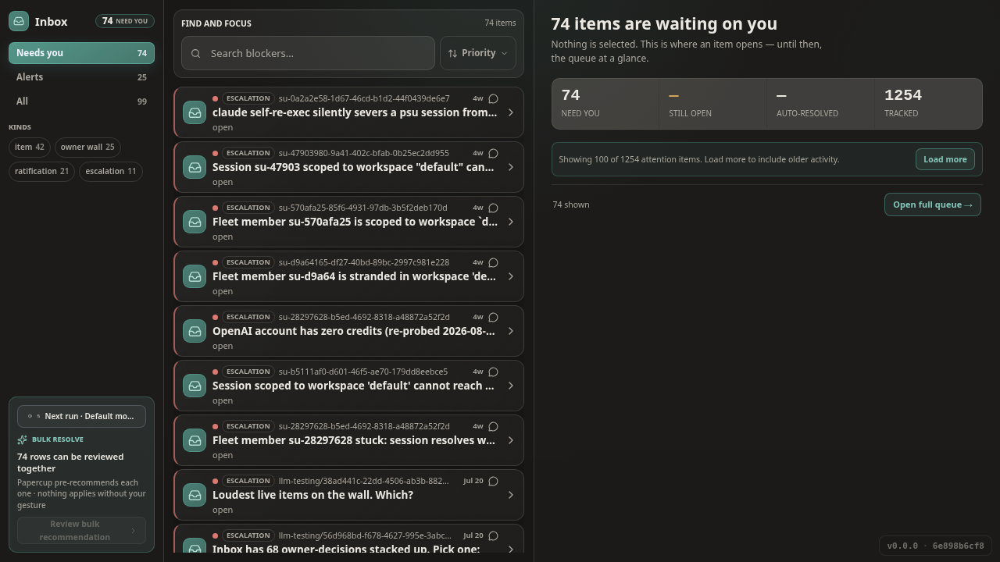
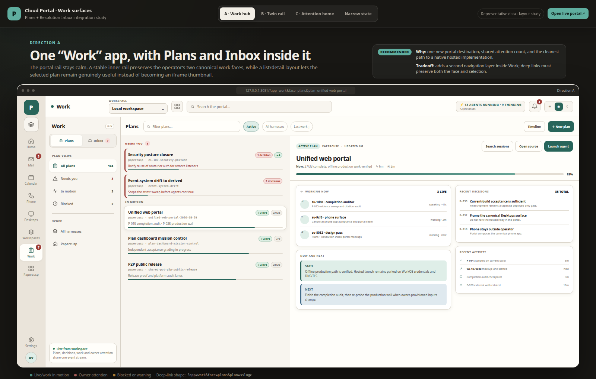
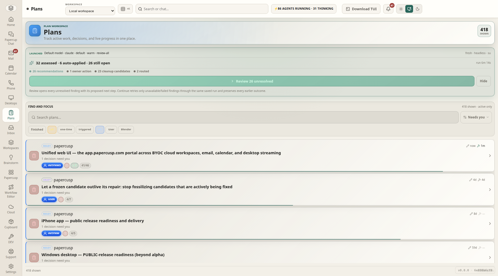

The mockup board from Aug 31 put a list on the left and the selected item on the right in every direction.
Direction B was chosen. What went live at 127.0.0.1:3081 frames the operator's chat-sidebar rail widgets
(PlansPane, InboxPane) as full pages, so both faces render as one stacked column at any width.
Bulk clean-up and bulk resolve — the one thing you asked to be carried over — did come across.
Left: the Direction B render you picked. Right: the live page today, captured at 1800 px wide so viewport is ruled out.

Filter rail → item list → selected decision with its premise and answer form. Bulk recommendation lives under the filters.
?app=inbox&filter=needs&item=<id>
Hero → bulk strip → find-and-focus → full-width rows. A row expands in place; nothing sits beside the list.
:3070/inbox?portalEmbed=1The board never rendered B's Plans face on its own; the Work-hub render (A) shows the same Plans list + plan detail, minus the inner “Work” rail that B drops.

“Needs you” and “In motion” groups on the left; the selected plan's progress, working-now agents, decisions, and state/next on the right.
?app=plans&plan=<slug>
Hero → clean-up strip → find-and-focus → full-width plan cards. Opening a plan replaces the list (dashboard takeover).
:3070/plans?portalEmbed=1Every line below is traceable; the session refs are searchable with sessions:read.
The design board is authored: directions A, B, C plus a narrow state, all list + detail. A contact sheet follows at 17:04.
Files: docs/mockups/portal-work-plans-inbox.{html,ir.json} · session codex:01a059a6… (su-80325278)You choose B and set the one hard requirement.
Owner turn · codex:01a059a6…:11“lets go with B. Put yourself on auto mode and implement this yourself now from start to finish. I didn't see the bulk resolving/cleaning for the inbox and plans in your mockups, make sure that functionality is carried over”
The implementing session settles the shape — reuse over rebuild, so the bulk flows arrive “by construction”:
Agent turn · codex:01a059a6…:23 · plan items P-098 / P-099 on unified-web-portal-2026-08-29“add two Portal rail entries that frame new chromeless operator routes; those routes mount the existing
PlansPaneandInboxPanedirectly, so all current cleanup/resolve logic — including persisted bulk runs and review takeovers — comes across by construction.”
Shipped exactly that. PlansPane and InboxPane were built for the desktop's chat sidebar (a ~360 px rail), so their single stacked column became the whole page. Nothing in the board's list/detail split was implemented; the operator routes describe themselves as “composition only.”
| Aspect | Designed (Direction B) | Shipped | Status |
|---|---|---|---|
| Rail placement | Plans and Inbox as first-class portal icons with badges | Both icons present, placed after Desktops; Inbox badge not yet wired | Kept |
| Layout | Two panes: list left, selected item right | One stacked column at every width | Dropped |
| Selection / detail | Inbox: decision detail + answer form beside the list. Plans: plan dashboard beside the list | Inbox: row expands in place. Plans: opening a plan replaces the list | Dropped |
| Bulk clean-up / resolve | Bulk recommendation card under the filters (added after your note) | Full PlansCleanupStrip and InboxBulkStrip flows, persisted runs, review takeover |
Kept |
| Deep links | ?app=inbox&filter=…&item=… · ?app=plans&plan=… |
?app=inbox / ?app=plans only; inner filter state lives in the iframe's own URL |
Partial |
| Narrow state | Rail collapses to icons; detail becomes a drawer or route-backed screen | Rail collapses; the single column just narrows | Partial |
Paths are repo-relative; the portal is its own checkout under the workspace.
plans and inbox as mount:"embedded-pane" pointing at /plans and /inbox on the operator.OtherDetail.Two honest routes. The first keeps everything that shipped and adds the missing pane where the page is already rendered.
Split 37/63 (Inbox) and 41/59 (Plans), the ratios the board used. The bulk strip stays at the top of the list column.